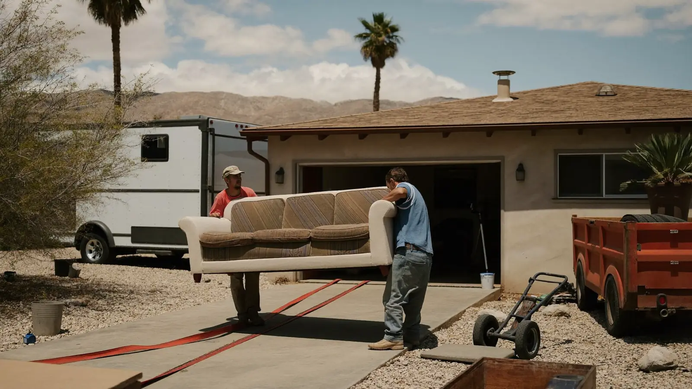
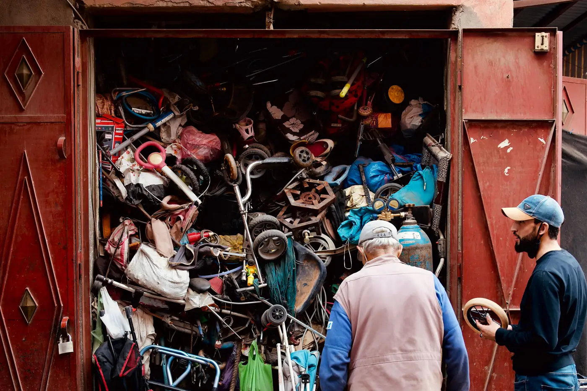

Furniture, mattresses, appliances, garage piles and whole-house cleanouts hauled off Pinal County properties. Free on-site estimate before we touch a thing.
Junk removal is full-service hauling: a crew comes to your property, carries the items out themselves, loads them onto a trailer, and takes them to a landfill, recycler or donation center. You are not renting a dumpster and you are not carrying anything to the curb. You walk the crew through what goes and what stays, approve a price, and the pile disappears.
That distinction matters more in Casa Grande than people expect. The City already runs uncontained trash pickup on a rotating zone schedule, so a small pile that lines up with your week can go out to the alley or curb for free. The problem is everything that does not fit that box — a garage packed to the rafters, a rental cleared out three weeks before your zone comes up, or a sleeper sofa that two people physically cannot move down a hallway.
Most of what we haul out of Casa Grande homes falls into four buckets: furniture and mattresses, appliances, general garage and household clutter, and yard or remodel debris. A single crew and trailer handles all four in one stop.

Five situations account for most of the calls we get in Casa Grande.
Tenants leave behind furniture, mattresses and a garage full of odds and ends. Property managers on Florence Boulevard and out by Mission Royale usually need it empty in under a week so the unit can be listed.
Casa Grande’s uncontained pickup runs by zone. Miss the set-out window and the pile sits in your alley for weeks. We do not care what week it is.
July through September storms take down fence panels, patio covers and mesquite limbs. That debris is heavy, awkward, and more than a bulk pickup will take at once.
A failed fridge or water heater cannot wait in the garage through an Arizona summer. Refrigerant units also need special handling, which the City charges extra for.
Downsizing and estate cleanouts mean sorting decades of belongings. We work room by room and pull donations aside instead of sending everything to the landfill.
Old cabinets, torn-out carpet, drywall scrap and tile. Construction debris is dense, and the City will not take it as household bulk trash.
National haulers advertise a low minimum and then price by fractions of a truck once they are standing in your driveway. Our estimate covers the pile you showed us, including stairs, refrigerant appliances and disposal fees. If the crew finds more than what was quoted, they tell you the new number before loading it.
Half the calls we get could have gone out with Casa Grande’s uncontained trash for free. We will tell you when that is true and how to schedule it, even though it means we do not get the job. The other half involve items the City turns down — construction debris, hazardous materials, oversized loads — and that is where we are worth the money.
Casa Grande, Arizona City, Coolidge, Eloy, Maricopa and the Florence Boulevard business strip. Being local means a same-week window instead of waiting on a Phoenix crew to route out to Pinal County when it suits them.
Volume drives the price. Junk removal is sold by how much space your items take up on the trailer, then adjusted for weight and how hard the load is to reach. Casa Grande pricing runs slightly under Phoenix metro because our disposal runs are shorter.
| Load size | What that looks like | Typical price |
|---|---|---|
| Single item / minimum | One couch, one mattress, one appliance | $95 – $175 |
| Quarter load (~4 yd³) | Small bedroom or a corner of the garage | $220 – $320 |
| Half load (~8 yd³) | A packed one-car garage | $380 – $530 |
| Full load (15 yd³) | Full two-car garage or a small apartment | $625 – $775 |
| Item | Typical price |
|---|---|
| Mattress or box spring | $75 – $125 |
| Sofa or loveseat | $95 – $155 |
| Refrigerator or freezer (refrigerant recovery included) | $99 – $149 |
| Washer or dryer | $75 – $115 |
| Hot tub (drain, cut and haul) | $475 – $875 |
| Shed teardown and haul | $525 – $1,450 |
What moves the number up: stairs beyond one flight on heavy items, roughly $25 to $75 each; dense debris like concrete, tile or wet drywall that hits a weight limit before it fills the trailer; and long carries from a back yard with no gate access.
What brings it down: having everything staged in the driveway or garage, and separating anything still usable so it goes to a donation drop instead of a paid landfill run. A typical single-stop residential job in Casa Grande lands around $375.
Not sure which side you fall on? Call and describe it. We will tell you straight.
Most single-item pickups in Casa Grande run $95 to $175, a quarter-load lands around $220 to $320, and a full 15-yard trailer runs $625 to $775. Price follows volume first, then weight and labor. We quote the whole job on site before anything gets loaded, so the number you hear is the number you pay.
Yes. Refrigerators, freezers and window AC units contain refrigerant, which has to be recovered by a certified tech before the unit can be scrapped. The City of Casa Grande charges a separate fee to take these at the curb or at the landfill. Our appliance pricing already includes that handling, so there is no surprise line item.
No, as long as the items are outside and you have approved the price. Plenty of Casa Grande customers leave a garage door code or set everything in the driveway before work. We text photos of the empty space and send the invoice by email when the truck pulls away.
We cannot take paint, solvents, pesticides, motor oil, propane tanks, medical sharps or ammunition. Those are household hazardous waste and have to go through Pinal County collection events. Anything else that fits through a door or gate is usually fair game, including mattresses, hot tubs and shed debris.
If your pile is small, your timing lines up with your zone, and you can carry everything to the alley or curb yourself, City uncontained trash is the cheaper route. Call Casa Grande Public Works at 520-421-8625 to confirm your week. We are the better option when the pile is oversized, the deadline already passed, or nobody in the house can lift a sleeper sofa.
Most Casa Grande jobs booked before noon get picked up the same week, and we hold slots open for rental turnovers and closings. Monsoon cleanup weeks in July through September fill up fastest. Call (520) 569-2190 and we will tell you the next open window before you commit.
Text a photo or call for a free on-site estimate. We will give you a firm price and the next open pickup window in Casa Grande.
Call (520) 569-2190 for a Free Estimate218 E Florence Blvd, Casa Grande, AZ 85122
Please note: This is our service business address — not a storefront or showroom. Casa Grande Junk Removal Pros is a mobile junk removal service, so we come to you and the office isn’t open to walk-in visitors. Call us and we’ll set up a free on-site estimate.